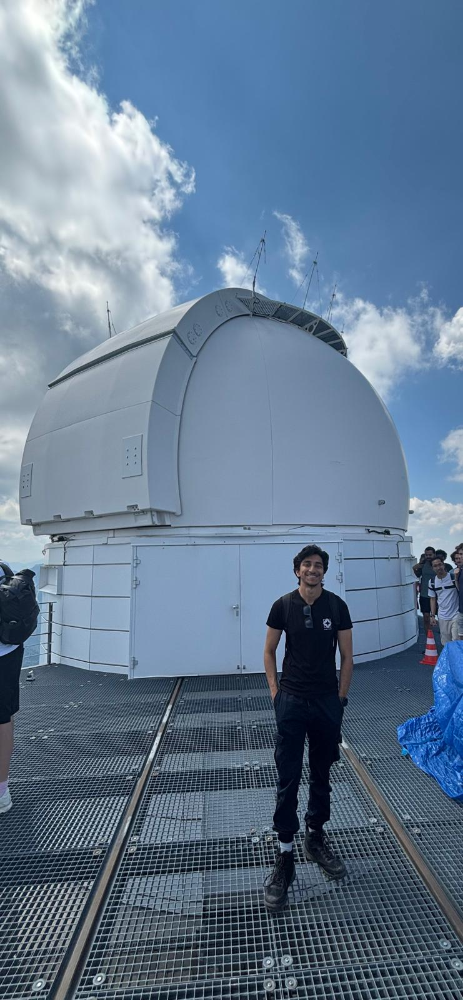
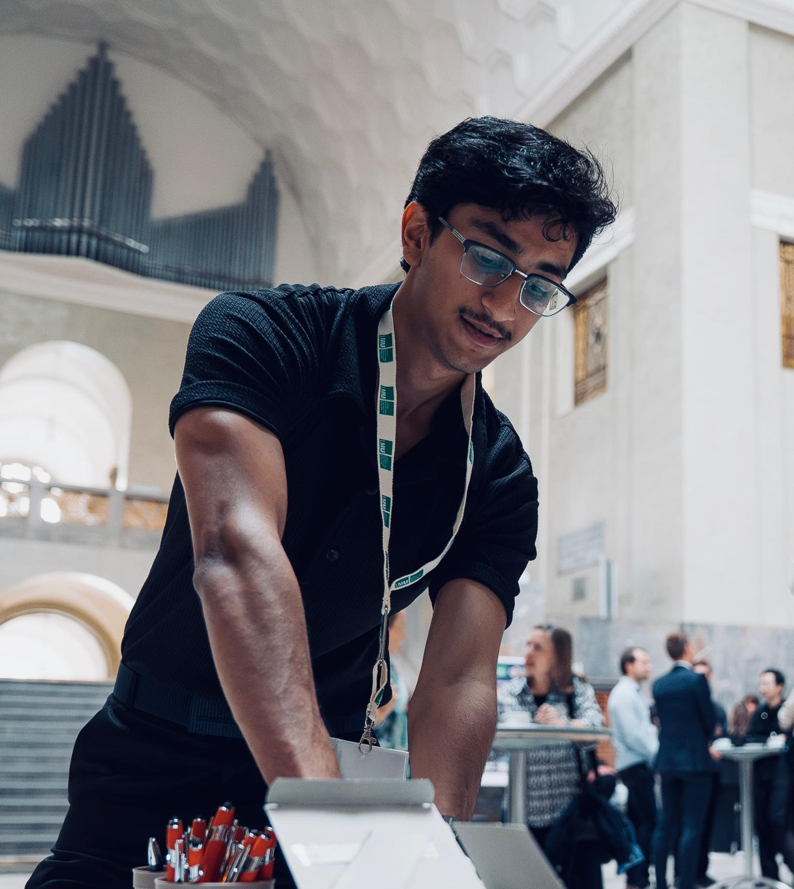

Hi there! I’m Jebraan!
I’m a final-year master’s student in Astrophysics at LMU Munich and part of the Chair for Theoretical Astrophysics of Extrasolar Planets, working with Dr Louise Dyregaard Nielsen in the observational group. My research focuses mainly on exoplanet transits and radial velocities. For my thesis, I aim to measure the masses of planets around hot, rapidly rotating stars, using observations from the Wendelstein Observatory. These planets are potential targets for the upcoming Ariel mission!

Next, I’ll be heading to the University of Southern Queensland for my PhD with Chelsea Huang. I’ll investigate how common planets are, focusing particularly on cool, Earth-sized planets around low-mass stars. Before Munich, I studied at Fergusson College in Pune, India, where I worked with Dr Priyanka Chaturvedi on estimating a star’s properties by comparing its spectrum with models using a chi-square method.
So, what does that actually involve? I spend a lot of time looking at stellar spectra, ranting about them for a while, and then looking again for signs of a planet tugging on its star. That tug makes the star wobble slightly, shifting features in its spectrum. Measuring those tiny shifts can be quite an adventure. If you’ve ever worked on hot stars, you’ll probably relate :)
The payoff makes it worthwhile. Those measurements help us work out a planet’s mass. Combine that with its radius, measured from transits, and we can estimate its density, or, loosely speaking, how “puffy” it is!
If exoplanets, stellar wobbles, or making sense of messy data sound interesting to you, feel free to reach out at ja.mudholkar@campus.lmu.de
I also help with public relations for the newly opened Munich Center for Geoastronomy. Away from research, I enjoy science communication, am learning to play the guitar, and make time for films with a great storyline.
